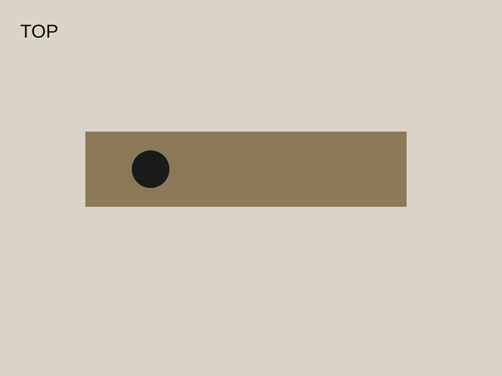
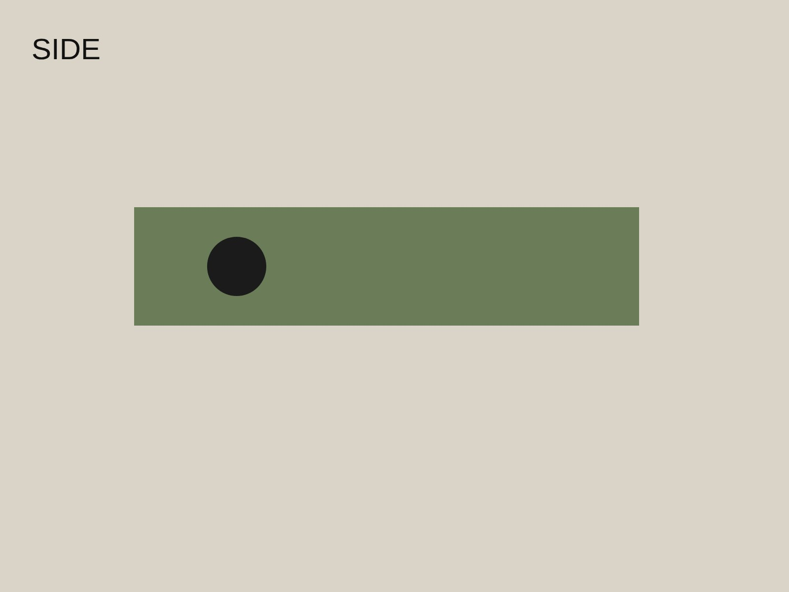
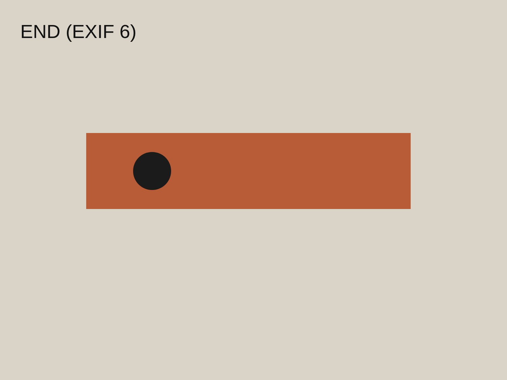

Norcold freezer hinge pin
3 faces · 3 features · mm
Edit

Top
1600 × 1200 · 1 dim

Side
1600 × 1200 · 0 dims

End
1200 × 1600 · 2 dims
Capture
Features
overall_l
top · end
42.18
mm
±0.10
pin_dia
end
⌀ 6.51
mm
±0.10
hole_dia
top
⌀ 3.02
mm
±0.10
overall_l: top and end differ by 0.13 mm, outside ±0.10. Check before export.
Export
Hands-on 3m 07s